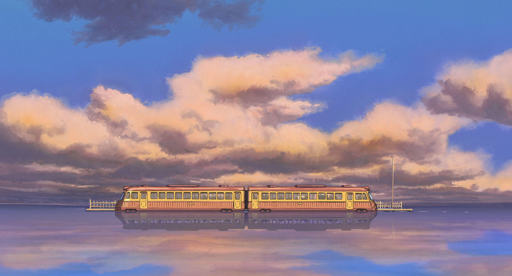

STUDIO GHIBLI
Studio Ghibli fue fundado por el animador, director, productor, guionista, autor y artista de manga Hayao Miyazaki; el director de cine japonés Isao Takahata; y el productor Toshio Suzuki. En los últimos 37 años, han creado 20 largometrajes (y contando), además de varios cortometrajes y comerciales de televisión. Sigue leyendo para conocer más sobre la historia y el futuro de este legendario estudio de animación.
Sus inicios
Takahata y Miyazaki se conocieron en la década de 1960 cuando ambos trabajaban para el estudio de animación japonés Tôei Dôga. Aunque colaboraron por más de una década, fue hasta mediados de los años 80 que decidieron comenzar su propia empresa. En 1985, con financiación de la editorial Tokuma Shoten, Takahata, Miyazaki y Suzuki fundaron Studio Ghibli, un pequeño estudio de producción en los suburbios de Tokio.
¿Por qué Studio Ghibli?
El nombre “Ghibli” hace referencia a la palabra italiana para el “viento caliente del Sahara”. El nombre es más que apropiado dado que el estudio quería “dar un nuevo aire a la industria del anime”. El nombre también se refiere al amor de Miyazaki por Italia y los aviones, como se puede apreciar en Se levanta el viento. El cineasta se inspiró en el Caproni Ca.309 Ghibli, un avión de vigilancia que fue diseñado en Italia durante la Segunda Guerra Mundial.
Te dejamos el listado de películas para puedas revisarlos (๑>◡<๑)